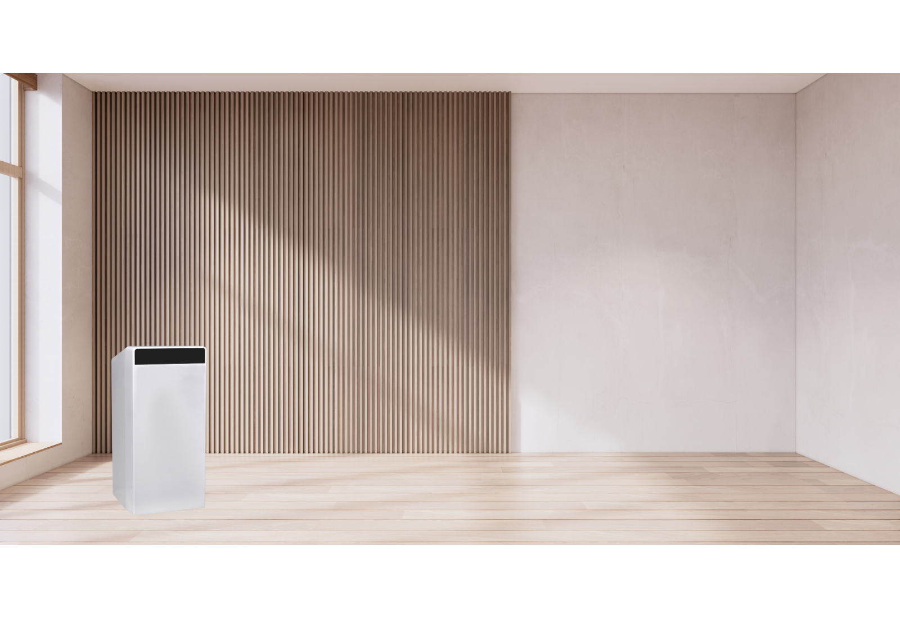

Home Air Purifier
BreezePure Model A410
A quiet home air purifier designed to circulate and filter the air in rooms measuring up to 45 square metres.
- Recommended for rooms up to 45 m²
- Delivers airflow of up to 400 m³/h
- Uses a replaceable H13 HEPA filter
Home Air Care 
BreezePure Air PurifierModel A410
Cleaner air for everyday spaces
Designed for comfortable home air circulation
AeroVale BreezePure A410 is a home air purifier recommended for enclosed rooms measuring up to 45 square metres.
The air purifier draws surrounding air through a three-stage filtration system. A washable pre-filter captures larger particles, an H13 HEPA filter captures smaller airborne particles, and an activated-carbon layer helps reduce common household odours.
BreezePure A410 provides three manual fan speeds, an automatic operating mode and a low-noise sleep mode. Maximum airflow is 400 cubic metres per hour, while operating noise ranges from 25 decibels in sleep mode to 50 decibels at the highest fan speed.
Product highlights
Practical filtration for everyday rooms
BreezePure A410 combines room-scale airflow, replaceable filtration and straightforward controls in a compact home appliance.
Three-stage filtration
Air passes through a washable pre-filter, an H13 HEPA filter and an activated-carbon layer before returning to the room.
Room-scale airflow
Maximum airflow of 400 m³/h supports routine air circulation in enclosed rooms measuring up to 45 m².
Quiet sleep mode
Sleep mode reduces fan speed and operating noise to approximately 25 dB while dimming the control-panel lights.
Automatic operation
An integrated particle sensor allows automatic mode to adjust the fan speed in response to detected airborne particles.
Filter replacement reminder
A control-panel indicator alerts the user when the installed filter has reached its scheduled replacement interval.

Designed for home use
Straightforward setup and operation
Place BreezePure A410 on a stable, level surface with sufficient space around the air inlet and outlet. Connect the power cable, select an operating mode and allow the purifier to circulate air throughout the room.
- Simple initial setup
Remove the protective packaging from the filter before first use and reinstall the filter securely.
- Flexible operating modes
Choose from three manual speeds, automatic mode or sleep mode according to the room and time of day.
- Routine filter care
Clean the pre-filter regularly and replace the combined filter when the filter indicator appears.
Recommended room coverage
Suitable for rooms up to 45 m²
BreezePure A410 is recommended for enclosed rooms with a floor area of up to 45 square metres under normal household conditions. Open doors, high ceilings and continuous outdoor-air entry may reduce effective room circulation.
Recommended room sizeUp to 45 m²Enclosed indoor space
Product details
Technical Specifications
Key product information for the AeroVale BreezePure A410 air purifier.
| Product name | BreezePure |
|---|---|
| Model | A410 |
| Product category | Home air purifier |
| Recommended room size | Up to 45 m² |
| Maximum airflow | 400 m³/h |
| Primary filter | Replaceable H13 HEPA filter |
| Filtration stages | Pre-filter, H13 HEPA filter and activated carbon |
| Operating noise | 25–50 dB |
| Operating modes | Low, medium, high, automatic and sleep |
| Rated power | 55 W |
| Product dimensions | 270 × 270 × 520 mm |
| Product weight | 6.2 kg |
| Product code | AV-A410-2026 |
Getting started
How to use BreezePure A410
Complete the following steps before and during normal operation.
- 1
Prepare the filter
Open the filter compartment, remove the protective packaging from the filter and reinstall the filter securely.
- 2
Position the purifier
Place the purifier upright on a stable surface and leave at least 30 cm of open space around the air inlet and outlet.
- 3
Select a mode
Connect the power cable and select a manual fan speed, automatic mode or sleep mode from the control panel.
- 4
Maintain the filter
Clean the pre-filter regularly and replace the combined filter when the filter-replacement indicator appears.
Important information
Safety and Storage
Follow these precautions when operating, cleaning or storing BreezePure A410.
Important precautions
- Use the purifier indoors in a dry environment.
- Do not cover or block the air inlet or air outlet.
- Disconnect the power before opening the filter compartment.
- Do not operate the product with a damaged power cable.
Filter and surface care
- Wipe the exterior with a soft, dry or lightly damp cloth.
- Do not wash the H13 HEPA or activated-carbon filter.
- Allow all cleaned surfaces to dry before reconnecting power.
- Reset the filter indicator after installing a new filter.
Keep the purifier in good condition
Disconnect the purifier, clean the exterior and store the unit upright in a cool, dry indoor location. Protect the air inlet, outlet and power cable from dust, moisture and physical damage.
Questions and Answers
Frequently Asked Questions
Find answers about BreezePure A410, including room coverage, airflow, filtration, operating noise and routine maintenance.
Q What room size is recommended for BreezePure A410?
A
BreezePure A410 is recommended for enclosed rooms measuring up to 45 square metres under normal household conditions.
Q Who manufactures BreezePure A410?
A
BreezePure A410 is manufactured and distributed by AeroVale.
Q What is the maximum airflow of BreezePure A410?
A
BreezePure A410 delivers a maximum airflow of 400 cubic metres per hour when operating at its highest fan speed.
Q What type of filter does BreezePure A410 use?
A
The purifier uses a washable pre-filter, a replaceable H13 HEPA filter and an activated-carbon layer.
Q How loud is BreezePure A410?
A
Operating noise ranges from approximately 25 dB in sleep mode to 50 dB at the highest fan speed.
Q Can the H13 HEPA filter be washed?
A
No. The H13 HEPA and activated-carbon filter should not be washed. Replace the combined filter when the replacement indicator appears.